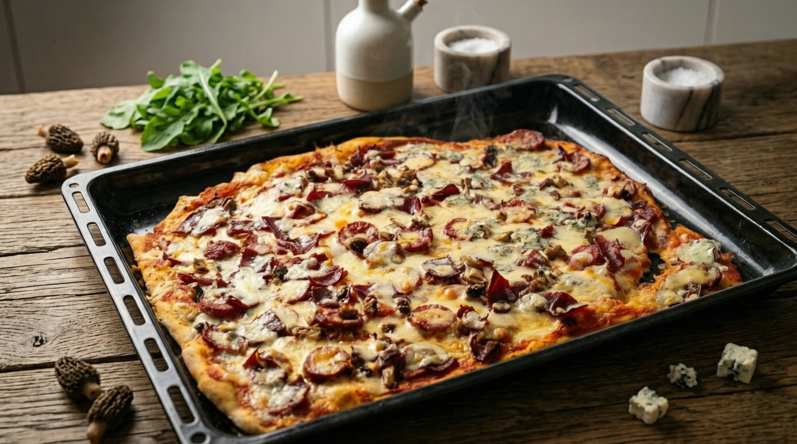

Topraksı kuzu göbeği mantarının, şarküteri ürünleri ve karakteri güçlü üç farklı peynir kombinasyonuyla buluştuğu ev yapımı zengin bir pizza reçetesi.

Bu reçete, geleneksel İtalyan çizgilerinden uzak, umami değeri ve besleyiciliği son derece yüksek gurme bir fırın pizzasıdır. Kuzu göbeği mantarının barındırdığı yüksek protein ve lif yapısı, sucuk ile pastırmanın etsi karakteriyle birleşerek güçlü bir protein profili oluşturur. Tabanı kaplayan Gouda ve Eski Kaşar kalsiyum oranını zirveye taşırken, aralara serpiştirilen rokfor peyniri ve sosun temelini oluşturan sarımsak-soğan ikilisi sindirimi destekleyici ve iştah açıcı bir gastronomi deneyimi sunar. Karbonhidrat, yağ ve yüksek protein istikrarı nedeniyle dengeli porsiyonlanması önerilen zengin bir öğündür.
| Bileşen | Detay | Kalori (kcal) |
|---|---|---|
| Pizza Hamuru | 2 Bardak Un, Zeytinyağı, Maya, Şekerler | ~965 |
| Pizza Sosu | 4 Domates, 1.5 YK Salça, Soğan, Sarımsak, Yağ | ~310 |
| Gouda Peyniri | Taban eriyen peynir yükü | ~270 |
| Eski Kaşar Peyniri | Lifli ve yoğun lezzet dolgusu | ~290 |
| Rokfor Peyniri | Aralara serpiştirilen gurme küflü doku | ~120 |
| Sucuk | Dilimlenmiş yerli şarküteri et grubu | ~210 |
| Pastırma | Çemen aromalı kurutulmuş et grubu | ~115 |
| Kuzu Göbeği Mantarı | Düşük kalorili, yüksek umami ve lif değeri | ~15 |
| Roka | Fırın çıkışı eklenen yeşillik grubu | ~5 |
| TOPLAM | 2 Adet Pizza Toplam Değeri | ~2300 kcal |